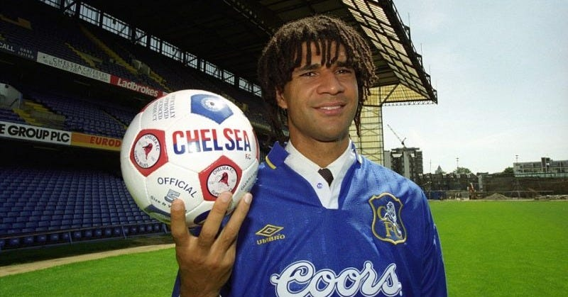
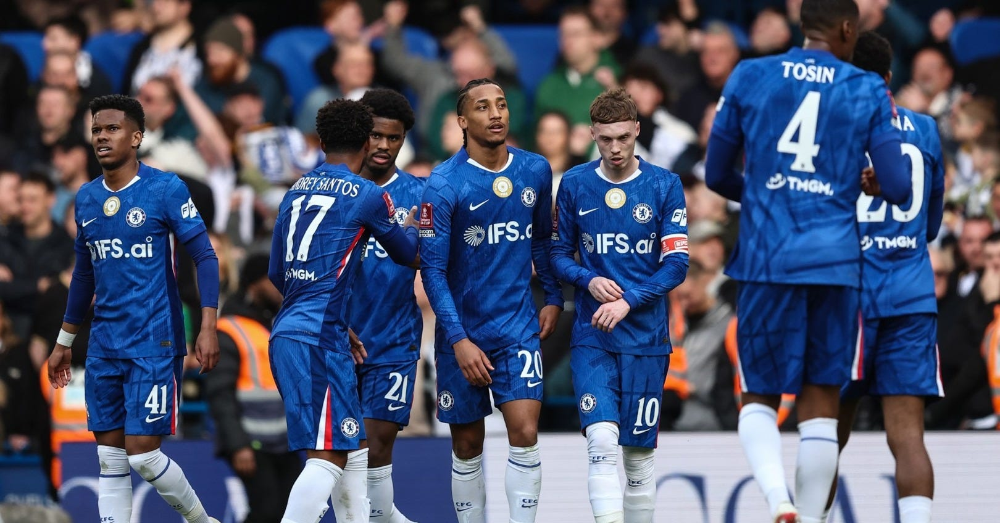
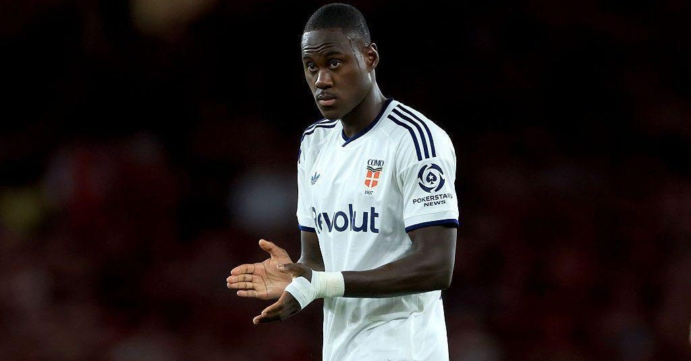
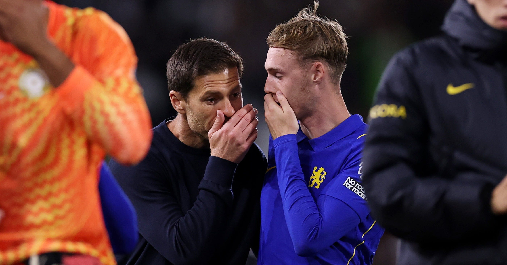

Keeping track of Chelsea’s transfer business now feels like something that should come with a spreadsheet, three screens and a strong coffee.
By 31 August, Chelsea had made 12 summer signings. Their own transfer tracker also listed 16 permanent departures or releases and another 16 players heading out on loan. That is 44 separate player movements in one window. You would imagine the bloke printing the shirts at Cobham has stopped learning surnames altogether.
The money is just as wild. One transfer-market calculation had Chelsea at £332.9 million spent and £247.3 million received before Emiliano Martínez arrived. Add his reported £7.5 million fee and the gross spend moves close to £340 million, while the net figure still sits around £90 million. Chelsea are once again among the biggest spenders in Europe, but they are now selling almost as aggressively as they buy.
And that is probably the first sign that this version of the strategy is a little different.
Geovany Quenda is 19 and contracted until 2034. That feels very Chelsea. Jordan Henderson is 36. Danny Welbeck is 35. Martínez is 33. Maxence Lacroix is 26. Morgan Rogers arrived for a British-record £117 million after proving himself with Aston Villa and England.
Chelsea are still shopping for the next big thing. They just seem a lot more interested now in buying players who can actually help on Saturday as well.
Chelsea Have Always Enjoyed A Bit Of Chaos

This is hardly a club built on sitting still.
Chelsea were formed because Stamford Bridge already existed and needed a football team to play in it, which feels quite fitting considering how often the club has done things slightly backwards ever since.
The 1990s brought Ruud Gullit, Mark Hughes, Gianfranco Zola and Gianluca Vialli. Then Roman Abramovich arrived in 2003 and decided steady progress was probably overrated.
The spending exploded. So did the trophies. Managers became much easier to replace.
José Mourinho won back-to-back league titles and still left during his third season. Carlo Ancelotti won the Double and was gone a year later. Roberto Di Matteo won the Champions League and lasted until November. Antonio Conte won the league and FA Cup and did not hang around much longer either.
Chelsea supporters got used to all of that because the team underneath it usually stayed recognisable.
Petr Čech was still there. John Terry was still there. Frank Lampard was still arriving late into the box. Didier Drogba was still turning up whenever there was a cup final to ruin for somebody else.
Chelsea could sack a manager and still look like Chelsea the following weekend.
Under BlueCo, the movement has been different. It is the players who have been coming and going at a ridiculous rate.
Buying Young Was Never Really The Problem

By July 2025, Chelsea had already signed 48 players under the new ownership and spent close to £1.5 billion. Half of those arrivals were midfielders or wingers. João Pedro became the 18th forward signed in just over three years, taking spending on attacking players beyond £560 million.
At that point, even Football Manager would probably have popped up asking if you were sure.
But there was always some logic behind it.
Chelsea wanted to buy players before they reached their peak, put them on long contracts and keep control over their value. If they developed into top players, brilliant. If not, loans and sales gave Chelsea another route. Strasbourg also became part of that pathway.
And plenty of it has worked.
Cole Palmer became Chelsea’s main attacking player. Moisés Caicedo grew into one of the best midfielders in the squad. João Pedro scored 20 goals in his first season and was voted Player of the Year. Chelsea finished fourth in 2024/25, won the Conference League and then beat Paris Saint-Germain 3-0 in the Club World Cup final.
For a while, it looked like Chelsea had finally found the answer to the question everyone had been asking since 2022.
Then they finished tenth.
That is the bit that makes the whole thing more interesting. Chelsea clearly had good players. They just did not always look like a settled team.
Last season they had the youngest squad in the Premier League, with an average age of 23.4. Sunderland were next at 25.0. There is young, and then there is practically needing ID to get into your own Christmas party.
Youth was not an excuse for finishing tenth, but you can see why Chelsea have started looking for a bit more experience.
Selling Is Now Half The Model

The other big change is that players are moving out almost as quickly as they arrive.
Marc Cucurella has gone to Real Madrid. Andrey Santos joined Manchester United. Trevoh Chalobah moved to Como. Liam Delap went to Nottingham Forest. Nicolas Jackson joined Aston Villa. Others have followed.
Jackson is probably the best example of how quickly Chelsea can move now. He arrived from Villarreal in 2023, played two seasons, went on loan to Bayern Munich and has now been sold to Villa. Delap lasted only 14 months before Forest paid a reported £45 million plus add-ons.
It can feel ruthless, but the accounts tell you why Chelsea are so willing to do it.
They made £152.5 million in accounting profit from player sales in 2023/24 and another £57.9 million in 2024/25. Revenue reached £490.9 million last year, but Chelsea still posted a £262.4 million pre-tax loss.
That does not mean Chelsea are suddenly about to run out of money. It does mean selling players is not just what happens when somebody becomes surplus to requirements.
It is part of the business model.
UEFA has already made that harder. Chelsea entered a four-year settlement after breaching financial rules and face potential penalties of up to €80 million. Their European squad registration is also tied more closely to savings made through outgoing players.
So every transfer now has a second conversation attached to it.
Great player. Looks exciting. How easy will he be to sell in three years?
Very romantic.
The Hard Bit Is Keeping The Right Ones

The early signs under Xabi Alonso have at least been entertaining.
Chelsea beat Fulham 3-2 and then Brighton 4-3 after going 3-0 up. Two league games, seven scored and five conceded.
Three goals ahead and still managing to make Stamford Bridge nervous. Some traditions are clearly safe.
The more interesting thing is the shape of the squad around those results.
Palmer, Caicedo, João Pedro and Rogers are all 24. They are still young enough to improve, but nobody needs to sit around talking about what they might become in 2029. They can decide Premier League matches now.
Then there is Martínez behind them. Henderson brings experience into the dressing room. Welbeck knows the league inside out. Lacroix is arriving in what should be his best years.
The younger players can still come through behind them. Quenda, Barco, Palestra and Satpayev all fit what Chelsea have been trying to do since BlueCo arrived.
They just do not all have to become important at the same time.
Chelsea still have one of the biggest five-year net spends in the Premier League. They have spent enough money by now that finding good footballers cannot really be the achievement.
The next bit is keeping enough of them together.
That was what the best Chelsea sides always had. Managers came and went. Signings arrived every summer. But Terry, Lampard, Drogba and Čech gave the whole thing a centre.
BlueCo have proved Chelsea can buy players.
They have proved they can sell them too.
The clever bit now might be knowing when to do neither.
For once, when supporters walk into Stamford Bridge next August, it would be nice if most of the good ones were still there.
If this one landed, the newsletter’s where the rest of it lives — two or three pieces a week, no noise.
Subscribe